2018年，一款以老虎机为核心玩法的游戏混的风生水起，从1月250多万美流水上涨到7月份的500多万再到今年1月份超1000万美元，月度流水年度涨幅高达250%。
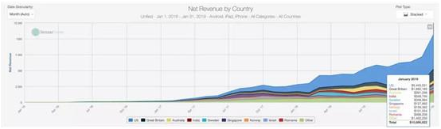
▲《金币大师》2016/1~2019/1月营收
这款产品就是以色列公司Moon Active推出的《金币大师》（Coin Master），其1月份营收前五大市场分别是美国（近545万美元）、英国（188万美元）、罗马尼亚（近47万美元）、澳大利亚（39万美元）和瑞典（近36万美元）。
有趣的地方在于，这款游戏除了打入美英澳这些传统的社交博弈类游戏大国之外，还切入了印度和以色列，1月营收分别达到近35万美元和10万美元。
虽然Moon Active并不把《金币大师》定义为老虎机游戏，但它火爆的背后之于社交博弈类游戏市场的意义在于圈层的破壁和融合。
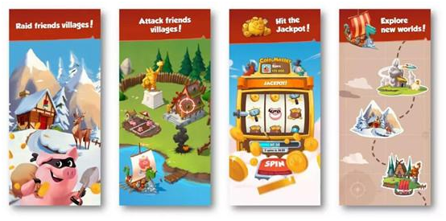
社交博弈类游戏营收规模虽然依然在增长，但是陷入了用户增长乏力，下载量触顶天花板的困境，如何破局是摆在厂商面前的命题，而《金币大师》——这种休闲+社交博弈类游戏机制的游戏，或是未来方向。
为此，我们一起看一下2018年社交博弈类游戏的局部概况以及细分品类的现状。下文中的数据均来自Sensor Tower前500名游戏的数据，不包括中国、日本和韩国，之后单独针对社交博弈类游戏做出的数据及趋势分析，且收入均不包括广告营收。
局部概况：喜忧参半
喜：收入同比涨23%，达到23亿美元。2018年进入前500名（不含中日韩）的社交博弈类游戏营收比2017年增长了23%，达到23亿美元，三大细分品类——老虎机、棋牌及宾果游戏的营收均实现了两位数的增长，分别达到18亿美元（+18%）、3.16亿美元（+38%）及1.72亿美元（+50%），其中老虎机游戏的营收占比高达近八成（78%）。
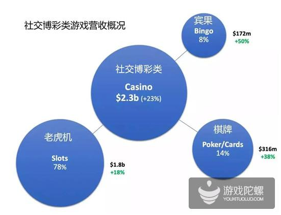
（注：仅进入前500名的数据，不含中日韩）
忧：用户增长乏力，下载量触顶天花板虽然社交博弈类游戏市场营收规模仍在增长，但是增速已经放缓，而从下载量方面看，在过去两年就面临了用户增长乏力的问题，下载量已经触顶天花板。
相比2017年，2018年进入前500名（不含中日韩）的社交博弈类游戏下载量下滑6%，达到2.53亿次，其中老虎机游戏下载量为1.31亿次，跟2017年持平，而棋牌和宾果游戏分别下滑了8%和23%，各自达到9900万次和2300万次。
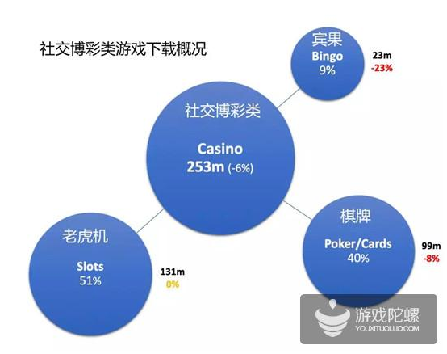
（注：仅进入前500名的数据，不含中日韩）
如果观察过去两年每个季度的下载量情况，我们发现，从2017年Q1约6700万次下载下滑到2018年Q4的6000多万次下载，整体呈下滑的趋势，这也解释了这类游戏的获客成本要高于其他大多数品类的原因。
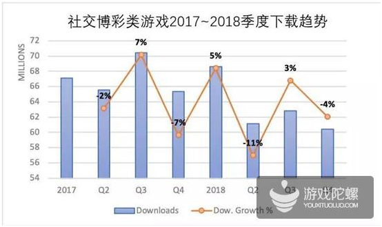
（注：仅进入前500名的数据，不含中日韩）
下载量的下滑同样影响到营收表现，过去两年，我们可以明显看出营收增速在放缓，其中2018年Q4环比增长只有1%。
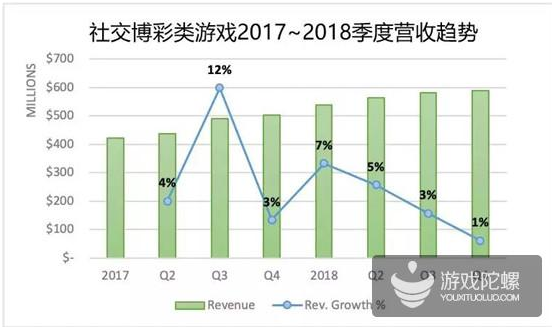
（注：仅进入前500名的数据，不含中日韩）
三大细分品类：霸主与突围者
老虎机：产品固化，品类融合或是革新方向。作为社交博弈类游戏中最大的细分品类，进入前500名（不含中日韩）的老虎机游戏2018年营收同比增加18%达到18亿美元，这主要得益于几家厂商营收的提升，包括Playtika、Product Madness、 Huuuge Global和Scientific Games International。
但从产品层面看，过去几年，老虎机游戏并没有太多创新，基本都遵循一个模式：进入游戏大厅 → 从大量的老虎机中选择一个→下注→开奖→这些操作不断重复，关注的焦点集中在产品UX（用户体验）、美术风格、品质或者系统微创新，且游戏一直都是单一货币的经济系统。这一切固化模式都在呼唤着“革新”。
《金币大师》的火爆为市场带来了新的创新方向，这种包裹着老虎机机制的休闲游戏颠覆了传统老虎机游戏玩法，不仅拓宽了用户群体，更是将这种品类融合的潜能摆在厂商面前。
事实上，在过去两年，已经有社交博弈类游戏巨头完成了跨品类游戏开发商的收购。比如2017年，Aristocrat收购中核游戏开发商Plarium，同年，Playtika收购《Pirate Kings》开发商Jelly Button Games，还有去年Playtika又收购休闲游戏开发商Wooga。
跨品类的并购不仅能帮助社交博弈类游戏公司拓展版图，也能为原有固化的产品带来创新的源泉。与此同时，老虎机游戏头部厂商在2018整年的市场占比波动不大，垄断壁垒依然难以打破。以12月为例，营收排名前五的厂商为：Playtika（23%）、Aristocrat （21%，Product Madness + Big Fish Games）、Scientific Games International（12%）、Huuuge Global（8%）及PlayStudios （7%）。
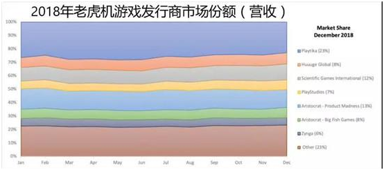
（注：仅进入前500名的数据，不含中日韩）
12月下载量排名前五的厂商则为：Playtika（20%）、Aristocrat （13%）、Huuuge Global（12%）、Scientific Games International（11%）及PlayStudios（8%）。
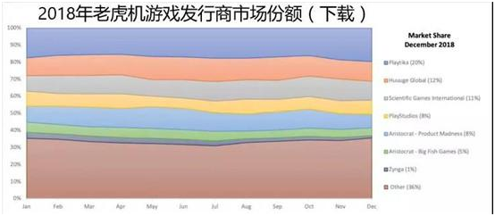
（注：仅进入前500名的数据，不含中日韩）
棋牌：Zynga下载份额腰斩，Playtika争霸一哥
2018年进入前500名（不含中日韩）的棋牌游戏的下载量相比上一年下滑了5%，不过营收增长了40%，达到3.15亿美元，这主要是受到三家厂商的业绩拉动：
第一，GSN，营收同比增加2500万美元，涨幅达93%，主要是由于《TriPeaks Solitaire》收入的增加；其次，Playtika，受到《WSOP》营收拉动，同比增2000万美元，涨幅为31%；
最后，Supertreat，同比增1500万美元，涨幅为1500%，主要是发布了打磨精良的产品《Solitaire - Grand Harvest》，而这款产品也直接跟《TriPeaks Solitaire》争夺市场。
在棋牌领域，Poker无疑是最大的细分领域，占比基本达八成或以上（2018年12月占比为78%），而《WSOP》和《Zynga Poker》又吃掉了绝大部分市场份额，2018年两款产品的下载量占Poker下载量的比例达60%（各占30%），营收占比高达八成，其中《WSOP》占35%，《Zynga Poker》占45%，不过前者增速（同比增20%）要远高于后者（持平）。
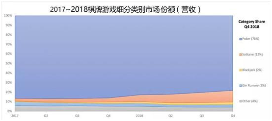
（注：仅进入前500名的数据，不含中日韩）
虽然Poker占了绝对优势，不过也要看到，由于《Solitaire - Grand Harvest》和《TriPeaks Solitaire》这两款产品的拉动，2018年Solitaire营收出现了大幅增长，Q4营收占棋牌总营收的比例上升至12%。
还有一个值得注意的细分品类是Blackjack，这两年下载量增速明显，占比从2017年＜1%增长至2018年底＞10%。
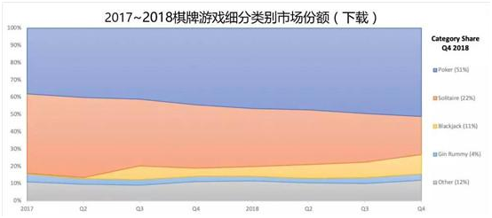
（注：仅进入前500名的数据，不含中日韩）
具体到棋牌游戏发行商，由于Playtika在今年1月份完成了对Supertreat的收购，若根据12月的占比计算，在营收和下载方面，Playtika均取代了Zynga成为棋牌领域的领头羊。
而Zynga霸主地位被挑战跟自身的下滑有很大关系，去年下载量市场份额从1月份的50%下降到23%，直接腰斩，收入份额同样下滑了近10%，从40%下滑到31%。下载量的大幅下降主要受到《Solitaire》和《Zynga Poker》的影响，前者同比减少了2500万次下载，下滑幅度达到65%，后者同比下滑了20%，减少300万次下载。
12月营收前五的厂商分别是Zynga（31%）、Playtika（26%）、Game Show Network（16%）、KamaGames（9%）和Supertreat（8%），这五家厂商所占的比例达到了90%，头部垄断严重。
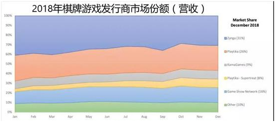
（注：仅进入前500名的数据，不含中日韩）
12月下载前五的厂商分别是Zynga（23%）、Playtika（19%）、KamaGames（14%）、Game Show Network（5%）和Supertreat（6%）。
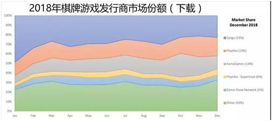
（注：仅进入前500名的数据，不含中日韩）
宾果：头部垄断最严重，5家厂商营收占了97%
2018年进入前500名（不含中日韩）的宾果游戏下载量同比下滑25%，但营收增长50%达到1.7亿美元，这主要得益于两款产品的推动：
一是Playtika的《Bingo Blitz》，营收同比增加3000万美元，涨幅达到55%；
二是NGames Interactive的《Bingo Party》，营收同比增加了1500万美元，但涨幅却达到惊人的250%，下载量涨幅也达到35%。同时它也是目前下载量最高的宾果游戏。
在发行商方面，2018年各家厂商的市场占比变动不大。Playtika依然保持领先优势，12月份收入和下载占比分别达到50%和25%，Jam City由于去年收购Uken Games（《Bingo Pop》开发商），营收占比增加至10%，下载占比增至9%。
具体来说，2018年12月宾果游戏营收前五的厂商吃掉了97%的市场份额，在三大细分品类中头部垄断最严重。这五家厂商分别是Playtika（50%）、NGames Interactive（13%）、Game Show Network（13%）、Scientific Games International（11%）和Jam City（10%）。

（注：仅进入前500名的数据，不含中日韩）
12月下载排名前五的厂商分别是NGames Interactive（26%）、Playtika（23%）、ScientificGamesInternational（10%）、Game Show Network（9%）和Jam City（9%）。
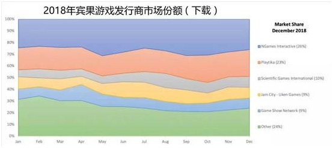
（注：仅进入前500名的数据，不含中日韩）
总体来说，宾果游戏已经是一个非常成熟的细分领域，增速放缓，产品之间差异不大，之于2019年来说，要么持续保持稳定或是迎来新的破局者。
2019预测
预测1：《金币大师》《Pirate Kings》和《Board Kings》将会催生更多品类融合的产品，因而导致社交博弈类游戏下载量的增长及拓展到非传统意义的社交博弈类游戏市场；
预测2：头部厂商更加注重广告变现和订阅变现模式，而这将成为新的营收增长点；
预测3：社交博弈类游戏厂商出于创新或增长考虑，已经在收购非社交博弈类游戏厂商，这将持续到2019年；
预测4：Scientific Gaming计划在2019年将其社交游戏业务进行IPO，如果顺利上市，那么这将直接挑战Playtika的霸主地位。
老虎机
预测1：跟上述一样，将会看到品类融合的产品；
预测2：头部产品将会继续提升产品运营和内容更新、尝试新玩法、增加新的货币系统及更深度复杂的社交元素。
棋牌
预测1：Playtika的《WSOP》将替代《Zynga Poker》成为新霸主；
预测2：Poker依然会是市场最大的棋牌细分品类，随后是Solitaire和Blackjack；
预测3：背靠Playtika，Supertreat的《Solitaire Harvest》的畅销榜排名将会超过GSN的《TriPeaks》，这也将催生更多《Solitaire Harvest》换皮产品
宾果
预测1：2019将持续保持稳定，头部发行商将继续保持他们的市场份额；
预测2：在产品变现和设计方面可能会出现创新。纹桃科技致力于棋牌游戏开发15年，拥有大量棋牌游戏成功案例。
想开发一款迅速盈利的海外棋牌，欢迎咨询热线电话：18711739336

扫码二维码咨询更多海外棋牌问题

游戏产品
PRODUCTS

售后服务
SERVICE

技术支持
TECHNOLOGY

运营指导
OPERATING